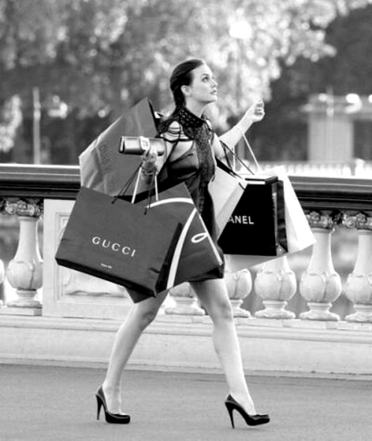

Fashion today is not just about clothing. It is a global economic force, a cultural mirror, and increasingly, a platform for social expression. Over the past few decades, its structure, cultural role, and economic model have changed dramatically.
The modern fashion industry operates in a layered hierarchy.
At the top are luxury conglomerates such as LVMH and Kering. These corporations own multiple heritage brands and function like financial institutions as much as creative houses. Design may drive image, but investors drive stability and growth.
Below luxury sit premium and contemporary brands, offering aspirational style at lower price points.
Then comes fast fashion, which revolutionized the industry by shortening production cycles. Instead of two seasonal collections per year, brands now produce new styles weekly. Speed, data analytics, and global manufacturing networks define this model.
Finally, there are digital-native and direct-to-consumer brands, built through social media platforms. Instagram, TikTok, and e-commerce have decentralized fashion authority. Trends no longer flow only from Paris or Milan — they emerge from online communities.
The industry has shifted from designer-led exclusivity to consumer-driven immediacy.
Fashion reflects society. As culture changes, fashion adapts.
In the 1980s and 1990s, fashion symbolized power and globalization. Structured silhouettes and luxury branding reflected economic expansion and corporate ambition.
The 2000s introduced celebrity-driven style and fast fashion expansion. Trends became more accessible but also more disposable.
The 2010s marked a turning point. Social media reshaped beauty standards and gave voice to movements centered around inclusivity, body positivity, and gender fluidity. Streetwear entered luxury spaces, breaking traditional hierarchies.
In the 2020s, sustainability and ethical awareness have become dominant themes. Consumers increasingly question supply chains, labor practices, and environmental impact. Fashion is no longer judged only on aesthetics but on values.
Economically, fashion has grown in scale and complexity. It has moved from predictable seasonal cycles to a constant production model. Technology now drives trend forecasting, inventory management, and consumer targeting.
However, this expansion has brought challenges:
Overproduction
Environmental degradation
Labor exploitation
Market saturation
At the same time, resale platforms, sustainable brands, and digital fashion innovations signal a restructuring of value systems. The industry is being pushed to balance profitability with responsibility.
This question remains debated.
On one hand, fashion has always carried political meaning. Clothing historically signals class, gender roles, rebellion, or conformity. Designers have long used fashion to comment on war, feminism, race, and identity.
On the other hand, some argue that fashion should remain an artistic or commercial space rather than a political platform.
Yet in a globalized, hyper-connected society, neutrality is difficult. When brands choose who they represent, how they source materials, or which causes they support, they inevitably engage with political and social structures.
Fashion may not need to be political — but it has rarely been apolitical.
The fashion industry has evolved from a relatively contained seasonal business into a rapid, globalized, culturally charged system. Its structure is corporate and digitized, its culture is increasingly identity-driven, and its economy is under pressure to become more sustainable.
More than ever, fashion sits at the intersection of commerce, culture, and conscience.
And that is precisely why it continues to matter.
— Debolina Tapadar